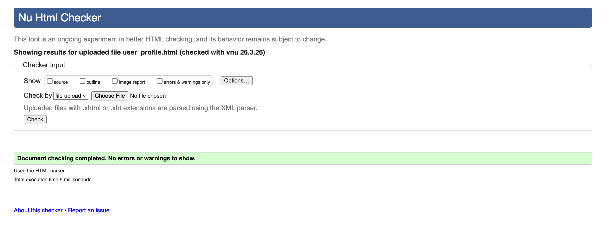
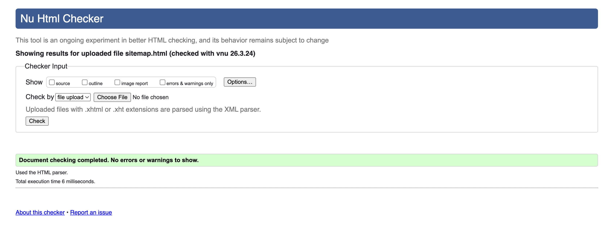
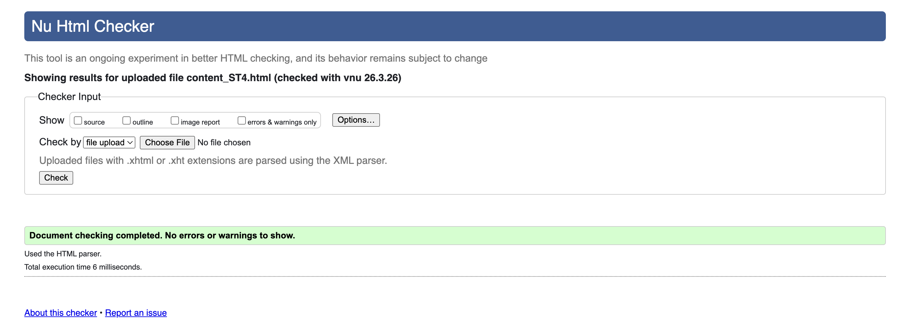

User Profile Page validation report
The User Profile page was tested using the W3C HTML Validator to ensure that the HTML structure followed proper web standards. The validation results confirmed that the page does not contain major structural errors and that all HTML elements are correctly nested.
Minor warnings were reviewed and corrected during development. These included ensuring all images contained alternative text and confirming that all links were properly defined. After making these adjustments, the page successfully passed validation and meets standard HTML requirements.

Back to Page Editor page
Sitemap Page validation report
The Sitemap page was validated using the W3C HTML validation tool to ensure the markup and SVG structure were correctly implemented. The validation process confirmed that the HTML structure and SVG elements were properly formatted.
The SVG elements used to create the sitemap diagram were checked to ensure that all tags were correctly nested and that attributes such as viewBox and links were valid. No significant errors were found, and the sitemap page successfully passed validation after minor formatting adjustments.

Back to Page Editor page
Content Page validation report
The Content page was also tested using the W3C HTML Validator to verify that the page follows correct HTML syntax and structure. The validation confirmed that headings, paragraphs, images, and navigation links were correctly used throughout the page.
During validation, minor issues such as missing alternative text for images and spacing inconsistencies were corrected. After resolving these issues, the page successfully met validation standards and complies with recommended web development practices.
